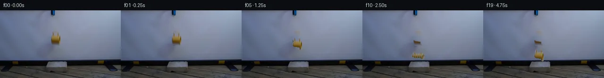

![首帧]()

Round 00
2026-11-06T02:23:37.642127+00:00像素候选变化代码 +479/−0inspection 更新
pixels f86070ae6a96b3d1 · code 84721320f1c7ad7a
查看本轮 generate.py 真实 diff
--- previous/generate.py
+++ current/generate.py
@@ -0,0 +1,479 @@
+#!/usr/bin/env python3
+"""PixelWorld-Text: Blue-black grabber releases yellow ceramic mug over concrete brick.
+Generates 20 frames (256x144 RGB) at 4 fps, 5 seconds. Frame 00 == first_frame.png."""
+
+import numpy as np
+from PIL import Image
+from pathlib import Path
+
+# ── Configuration ──────────────────────────────────────────────────
+W, H = 256, 144
+N_FRAMES = 20
+WORKSPACE = Path(__file__).parent
+FRAMES_DIR = WORKSPACE / "frames"
+TMP_DIR = WORKSPACE / ".tmp"
+FRAMES_DIR.mkdir(exist_ok=True)
+TMP_DIR.mkdir(exist_ok=True)
+
+# ── Load first frame ───────────────────────────────────────────────
+src = np.array(Image.open(WORKSPACE / "first_frame.png")).astype(np.float64)
+assert src.shape == (H, W, 3), f"Unexpected shape: {src.shape}"
+
+# ── Mug mask ───────────────────────────────────────────────────────
+# The mug is yellow/golden with reddish base, inside a known bbox
+mug_mask = np.zeros((H, W), dtype=bool)
+bbox_y1, bbox_y2 = 47, 72
+bbox_x1, bbox_x2 = 108, 128
+
+for y in range(bbox_y1, bbox_y2):
+ for x in range(bbox_x1, bbox_x2):
+ r, g, b = src[y, x]
+ # Yellow mug body: warm tones with R > G > B
+ if (r > g and r > b and r - b > 15 and g > 70):
+ mug_mask[y, x] = True
+ # Reddish ceramic base tones
+ elif (r > 100 and r - b > 10 and g > 50 and r > g):
+ mug_mask[y, x] = True
+ # Golden-brown highlights
+ elif (r > 120 and g > 90 and b < 100 and r - b > 20):
+ mug_mask[y, x] = True
+
+# Extend mask slightly to include mug handles/edges
+# Check immediate neighbors of masked pixels
+for _ in range(2):
+ expanded = mug_mask.copy()
+ for y in range(bbox_y1 - 2, bbox_y2 + 2):
+ for x in range(bbox_x1 - 2, bbox_x2 + 2):
+ if not mug_mask[y, x]:
+ # If surrounded by mug pixels on 3+ sides, include
+ neighbors = 0
+ for dy in [-1, 0, 1]:
+ for dx in [-1, 0, 1]:
+ ny, nx = y + dy, x + dx
+ if (bbox_y1 <= ny < bbox_y2 and bbox_x1 <= nx < bbox_x2
+ and mug_mask[ny, nx]):
+ neighbors += 1
+ if neighbors >= 3:
+ r, g, b = src[y, x]
+ # Only include if not clearly blue-black or white
+ if not (b - r > 15 and b - g > 5 and r < 90):
+ if not (r > 130 and g > 130 and b > 130):
+ expanded[y, x] = True
+ mug_mask = expanded
+
+mug_ys, mug_xs = np.where(mug_mask)
+mug_y0, mug_y1 = mug_ys.min(), mug_ys.max()
+mug_x0, mug_x1 = mug_xs.min(), mug_xs.max()
+mug_h = mug_y1 - mug_y0 + 1
+mug_w = mug_x1 - mug_x0 + 1
+print(f"Mug: y=[{mug_y0},{mug_y1}], x=[{mug_x0},{mug_x1}], size={mug_w}x{mug_h}")
+
+# ── Extract mug sprite (RGBA) ──────────────────────────────────────
+mug_sprite = np.zeros((mug_h, mug_w, 4), dtype=np.float64)
+for ly in range(mug_h):
+ for lx in range(mug_w):
+ gy, gx = mug_y0 + ly, mug_x0 + lx
+ if mug_mask[gy, gx]:
+ mug_sprite[ly, lx, :3] = src[gy, gx]
+ mug_sprite[ly, lx, 3] = 1.0 # alpha=1
+ else:
+ mug_sprite[ly, lx, :3] = 0
+ mug_sprite[ly, lx, 3] = 0.0 # alpha=0
+
+# Mug centroid (weighted by alpha)
+alpha_vals = mug_sprite[:, :, 3]
+mug_centroid_y_local = np.sum(np.arange(mug_h)[:, None] * alpha_vals) / np.sum(alpha_vals)
+mug_centroid_x_local = np.sum(np.arange(mug_w)[None, :] * alpha_vals) / np.sum(alpha_vals)
+
… diff truncated; 392 more lines …